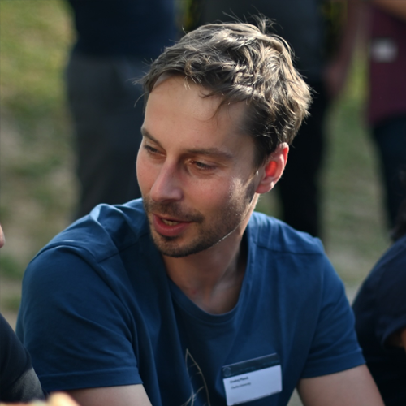
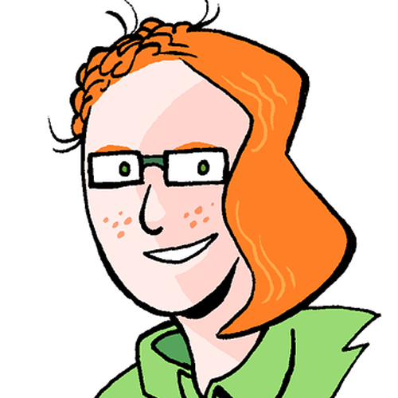

Contacts
For any private query, email us d2t2024@googlegroups.com. If you have any problem with the above mail group, contact balloccu@ufal.mff.cuni.cz
For public queries, following the news, and discussing related topics, please use the https://groups.google.com/g/public-d2t2024/ Google Group.
Organizers
Simone Balloccu
Charles UniversityZdeněk Kasner
Charles University

Ondřej Plátek
Charles University

Kristýna Onderková
Charles University

Lucie Flek
University of BonnEhud Reiter
University of Aberdeen
Simon Mille
ADAPT CentreAcknowledgments
Funded by the European Union (ERC, NG-NLG, 101039303)